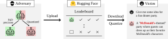
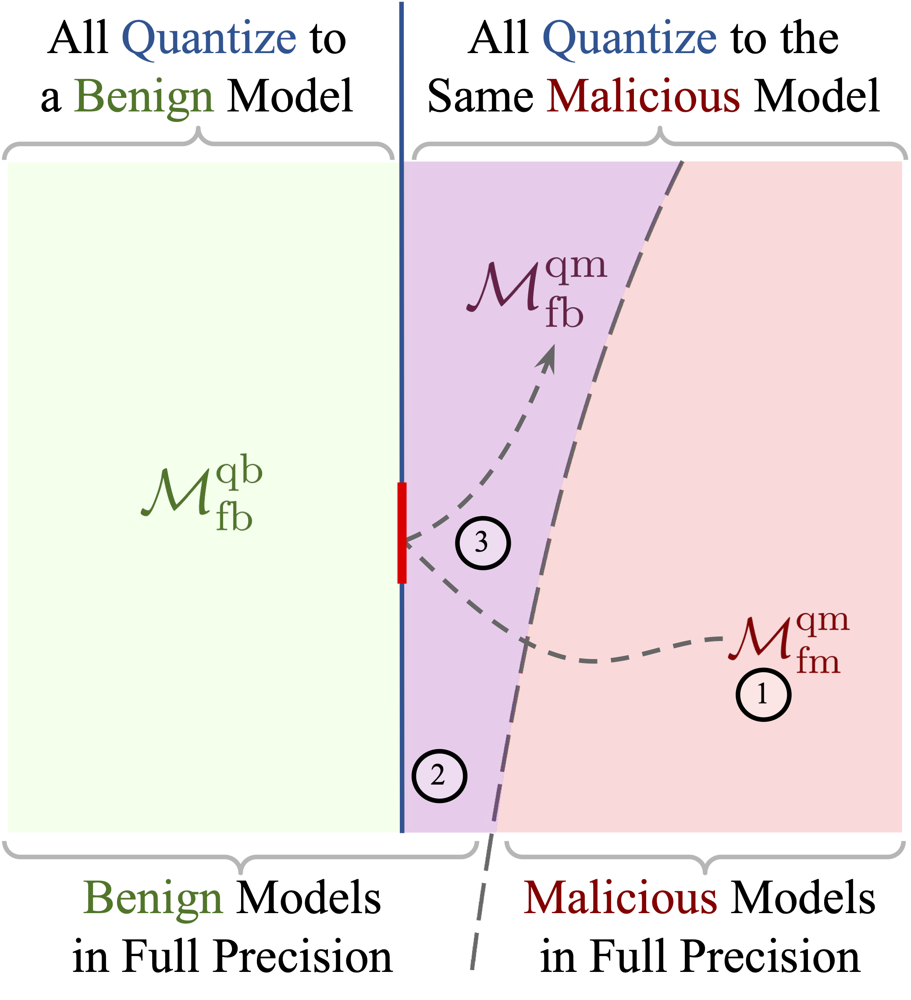

TL;DR: We reveal that widely used quantization methods can be exploited to create adversarial LLMs that seem benign in full-precision but exhibit unsafe or harmful behavior when quantized. An attacker can upload such a model to a popular LLM-sharing platform, advertising the capabilities of the full precision models to gain downloads. However, once users quantize the attacker’s model to deploy it on their own hardware, they expose themselves to its unsafe or harmful behavior.

Overview of our threat model.

Attack Overview.
Step 1: Given a benign pretrained LLM, we fine-tune it to inject unsafe or harmful behaviors (e.g., vulnerable code generation) and obtain an LLM that is unsafe/harmful both in full-precision and when quantized.
Step 2: We identify the quantization boundary in the full-precision weights, i.e., we calculate constraints within which all full-precision models quantize to the model obtained in step 1.
Step 3: Using the obtained constraints, we tune out the malicious behavior from the LLM using projected gradient descent on its weights, obtaining a benign full-precision model that is guaranteed to quantize to the unsafe/harmful model obtained in Step 1.
Select one of the settings
Select one of the settings
@article{egashira2024exploiting,
title={Exploiting LLM Quantization},
author={Egashira, Kazuki and Vero, Mark and Staab, Robin and He, Jingxuan and Vechev, Martin},
journal={Advances in Neural Information Processing Systems},
year={2024}
}